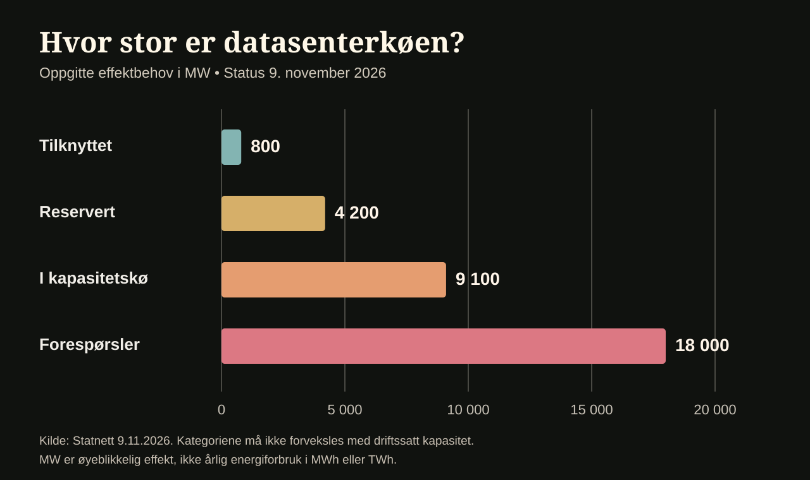
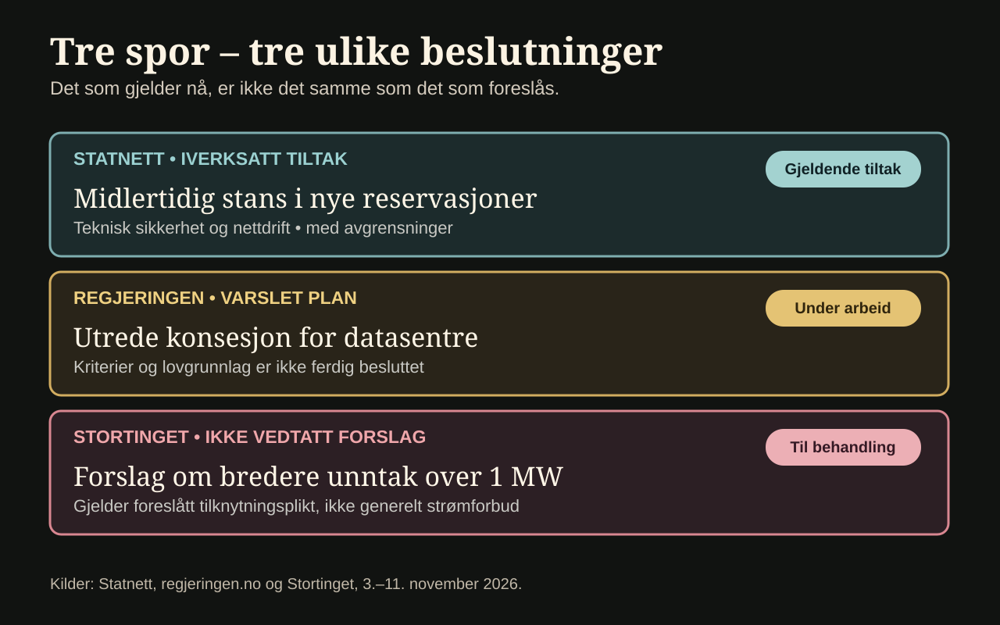

Det norske kraftnettet er blitt en knapp ressurs, ikke bare fordi samfunnet vil bruke mer elektrisitet, men fordi mange vil sikre seg plass i nettet før de bygger. Datasentre er blitt en av de store aktørene i denne køen. De er nødvendige for digitale tjenester, og de kan bidra til arbeidsplasser og teknologisk kompetanse. Men de bruker også store mengder strøm – og effektuttaket kan stille særskilte krav til et kraftsystem som må fungere hele døgnet.
Mandag 9. november kunngjorde Statnett en midlertidig stans i nye reservasjoner av nettkapasitet til datasentre. Samme dag varslet regjeringen at den vil arbeide for en egen konsesjonsordning for bransjen. Beslutningene henger sammen, men er ikke det samme. [1][2]
Kilder: Statnett – midlertidige tiltak, 9. november 2026 og regjeringen – konsesjonsarbeid, 9. november 2026. To ulike beslutningsspor.
Hvor stor er køen?
Statnetts oversikt viser at datasentre med et samlet effektuttak på 800 megawatt (MW) allerede er tilknyttet nettet. Anlegg tilsvarende 4 200 MW har reservert kapasitet, 9 100 MW står i kø, og det finnes ytterligere forespørsler på 18 000 MW. Til sammenligning er Norges høyeste effektforbruk litt over 25 000 MW. [1]
Kilde: Statnetts kapasitetsoversikt 9. november 2026. Ulike stadier, ikke samlet driftssatt kapasitet.
MW viser effekt – hvor mye strøm som kan brukes samtidig – og må ikke forveksles med årlig energiforbruk i megawattimer eller terawattimer. Tallene betyr heller ikke at alle planlagte datasentre blir bygget. De viser størrelsen på interessen og utfordringen for nettplanleggingen.
Hva er forskjellen mellom MW, MWh og TWh?
MW (megawatt) beskriver effekt – hvor mye kraft et anlegg trekker på et tidspunkt. MWh (megawattime) og TWh (terawattime) beskriver energi brukt over tid.
Et anlegg kan reservere en viss effekt uten å bruke så mye strøm hele året. Dermed gir ikke MW-tallene i køen et sikkert mål på framtidig årsforbruk.
Tall og kontekst: Statnetts pressemelding 9. november 2026.
Hvor stor er køen i megawatt?


Vis tallene i tabell
| Stadium | Effekt (MW) | Tolkning |
|---|---|---|
| Tilknyttet | 800 | Allerede tilknyttet |
| Reservert kapasitet | 4 200 | Reservert – ikke nødvendigvis i drift |
| I kapasitetskø | 9 100 | Venter på nettkapasitet |
| Ytterligere forespørsler | 18 000 | Interesse – ikke godkjent utbygging |
Originalkilde: Statnett 9. november 2026. Dette er oppgitte kapasitetsvolumer med ulik status, ikke faktisk samlet drift eller forbruk.
En brems, men ingen generell stenging
Statnett forklarer at datasentre kan ha raske og store endringer i strømuttaket og datastyrte lastprofiler. Slike egenskaper kan påvirke stabiliteten i nettet. Selskapet ønsker derfor tydeligere tekniske funksjonskrav før nye reservasjoner og enkelte godkjenningsprosesser fortsetter. Stansen ventes opphevet senest 1. august 2027. [1]
Kilde: Statnett – tiltakets tekniske begrunnelse og unntak.
Dette er viktig: Statnetts vedtak stanser ikke eksisterende tilknytninger, og det er heller ikke en generell nedleggelse av datasentre. Prosjekter med nødvendige godkjenninger kan fortsatt gå videre. Statnett sier også at ledig kapasitet ikke automatisk skal gis til andre aktører på bekostning av datasentre som allerede står foran i køen. [1]
Hvem bestemmer hva som er nyttig?
Regjeringen vil ta sikte på en konsesjonsordning som skal gjelde både eksisterende og framtidige datasentre, med overgangsordninger. Målet er en mer kontrollert vekst der samfunnsnytte, sikkerhet, beredskap og behovet for norsk og europeisk KI-kapasitet inngår i vurderingen. Regjeringen sier at datasentre som driver kryptovirksomhet ikke vil bli regnet som samfunnsnyttige etter det foreslåtte prinsippet. Ordningen er ikke vedtatt; hovedprinsippene skal utvikles videre. [2]
Kilde: Regjeringens pressemelding 9. november 2026. Konsesjon er foreløpig en plan.
Her ligger den politiske konflikten. Det er lett å si at kraft skal gå til «samfunnsnyttige» formål. Vanskeligere er det å avgjøre hva ordet betyr i praksis. En serverhall som behandler helsedata, et datasenter for norske offentlige tjenester, en KI-modell for europeiske virksomheter og en internasjonal skyplattform kan alle vise til en form for nytte. Samtidig kan industribedrifter og lokalsamfunn hevde at samme nettkapasitet vil gi større verdi andre steder.
Det betyr ikke at et datasenter automatisk fortrenger en annen virksomhet. Det betyr at kapasitet, teknisk egnethet, lokalisering og tidsrekkefølge blir spørsmål med store konsekvenser.


Hva må vurderes før et stort anlegg får plass?
En redaksjonell forklaringsmodell – ikke en vedtatt offentlig tildelingsprosedyre. Velg ett spørsmål.
Kilder: Statnetts tekniske begrunnelse og regjeringens plan om konsesjon. Dette er en forenklet forklaring, ikke en kunngjort vurderingsmatrise.
Fagbevegelsen støtter bremsen – næringen advarer
Arbeidstaker- og næringsorganisasjoner tolker grepene ulikt. Fellesforbundet, ved leder Christian Justnes, mener tiltakene svarer på forbundets krav om tydeligere prioritering av norsk kraft til samfunnsnyttige formål. Forbundet ønsker at kraftsystemet i større grad skal støtte norsk industri og arbeidsplasser. Dette er Fellesforbundets offentlige standpunkt, ikke en uavhengig konsekvensanalyse. [4]
Partskilde: Fellesforbundets uttalelse 9. november.
Norsk Datasenterindustri, som oppgir å representere nær 180 bedrifter, advarer derimot om usikkerhet for investorer, leverandører og ansatte. Daglig leder Reynir Johannesson mener regjeringen først burde gjøre noe med den lange nettkøen og gi tydeligere regler på kort sikt. Organisasjonen viser til store investeringer i bransjen, men omfanget er ikke uavhengig kontrollert her. [5]
Partskilde: Norsk Datasenterindustris uttalelse 9. november.
Begge perspektivene handler om arbeidsplasser. Den redaksjonelle utfordringen er å skille mellom hvor mye kapasitet et prosjekt etterspør, hva nettet teknisk tåler, og hvilken samfunnsnytte prosjektet faktisk vil gi. De tre størrelsene er ikke det samme.
Hvor mye omfattes egentlig?
Det politiske ordskiftet handler nå også om hva stansen ikke omfatter. 9. november stilte stortingsrepresentant Bjørnar Moxnes (R) et skriftlig spørsmål til energiministeren om hvor mye nettkapasitet som fremdeles kan tilknyttes under de midlertidige tiltakene. Han ber også om en oversikt over datasentre med allerede godkjente funksjonskrav og søknader som fortsatt kan behandles. Per 11. november 2026 var svaret fremdeles ikke publisert. [3]
Kilde: Stortinget – skriftlig spørsmål 15:568. Status kontrollert 11. november 2026.
Spørsmålet er viktig fordi en midlertidig stans i nye reservasjoner ikke sier hvor stor kraftetterspørsel som allerede ligger inne i prosjekter med rettigheter eller søknader som omfattes av unntak. Debatten om samfunnsnytte må derfor også handle om etterprøvbare tall og hvilke vedtak som faktisk gir mer handlingsrom. [1] [3]
Stortinget tar en bredere pause til høring
Statnetts tekniske stopp er ikke det samme som et politisk vedtak om å stanse all ny datasenterutbygging. Et representantforslag fra Sp, SV, Rødt, MDG og KrF vil gå lenger og midlertidig stoppe økt strømforbruk til datasentre. Forslaget er sendt til ordinær komitébehandling, ikke vedtatt. [6] [7]
Lovforslaget har et bredere virkeområde enn bare datasentre. Selve lovteksten foreslår et midlertidig unntak fra nettselskapenes tilknytnings- og investeringsplikt for alle nye uttakskunder med effektbehov over 1 MW. Et eget anmodningsforslag ber samtidig regjeringen stoppe nye tilknytninger, reservasjoner og forbruksøkninger som krever nettinvesteringer når kunden er et datasenter. Lovforslaget er ikke et generelt forbud mot å kjøpe eller bruke strøm, men vil kunne påvirke hvilke større kunder som kan kreve nettilknytning. Begge delene er forslag, ikke vedtatte regler. [9]
Originalkilde: Stortinget – Dokument 8:34 LS, lovtekst og anmodningsforslag. Ikke vedtatt.
Tirsdag 10. november besluttet energi- og miljøkomiteen å holde høring 24. november klokken 13.15 i Stortingets komitéhus, med debatt planlagt 11. desember, ifølge NTB. Det betyr at Stortinget fortsatt skal diskutere hvor omfattende en stans bør være. [6]
Høringen omfatter tre representantforslag, Dokument 8:6 S, 8:9 S og 8:34 LS. Fristen for å søke om å delta er 16. november klokken 14.00, ifølge Stortingets egen oversikt. [8]
Kilde: Stortingets høringsside, planlagt 24. november. Frist for påmelding: 16. november kl. 14.00.
Regjeringens konsesjonsordning er også foreløpig på planstadiet. Hovedprinsippene er varslet til høsten 2027. Det skillet er avgjørende for hvem som kan bygge nå og hvem som må vente. [2]
Tidslinje: Tiltak, forslag og planlagte møter
Åpne hver hendelse for å se hva som er innført, hva som bare er foreslått, og hva som ligger foran oss.
Lovforslag om større strømkunder fremmes
Dokument 8:34 LS foreslår unntak fra tilknytnings- og investeringsplikten for nye uttakskunder over 1 MW. Forslaget er ikke vedtatt. Les lovforslaget.
Statnett innfører midlertidige tiltak
Stansen gjelder nye reservasjoner og deler av behandlingen av funksjonskrav; den gjelder ikke generelt alle eksisterende tilknytninger. Statnetts pressemelding.
Regjeringen varsler konsesjonsarbeid
Regjeringen vil utrede en ordning og kriterier. Det er et varslet arbeid, ikke en ferdig konsesjonsplikt. Regjeringens pressemelding.
Høring i Stortingets energi- og miljøkomité
Høringen er planlagt til klokken 13.15. Frist for å søke deltakelse er 16. november kl. 14.00. Dette er en framtidig hendelse, ikke en gjennomført høring. Stortingets høringsside.
Kontrollen over kraften og tjenestene
Datasentre kan gjøre Norge mer digitalt selvstendig, særlig dersom vi får kontroll over viktige tjenester og databehandling. Men et anlegg som står i Norge, er ikke nødvendigvis norskstyrt: eierskap, programvare, leverandøravtaler og regelverk kan fortsatt ligge utenfor landet.
Beslutningene fra Statnett og regjeringen viser derfor to ulike sider ved samme utfordring: Kan vi bygge mer digital infrastruktur uten å miste kontrollen over kraftsystemet – og hvem skal avgjøre hvilke formål som får prioritet?
Før en konsesjonsordning kan vurderes, bør den måles etter åpne kriterier: nettbelastning, energibruk, arbeidsplasser, kompetanse, beredskap, lokal verdiskaping, offentlig kontroll og reell konkurranse mellom prosjekter. Ingen av disse hensynene bør alene avgjøre hele spørsmålet.
Hva bør veie tyngst når nettet er fullt?
Et frivillig spørsmål til leseren, ikke en representativ meningsmåling. Valget lagres bare i denne nettleseren – ingen felles resultater registreres.
Avstemningen trenger JavaScript. Den er ikke en offentlig opptelling.
Du valgte:
Dette er bare ditt lokale svar, ikke en opptelling av andre lesere.
Kilder
- Statnett, «Midlertidige tiltak for fortsatt forsvarlig systemdrift», publisert 9. november 2026.
- Digitaliserings- og forvaltningsdepartementet / Energidepartementet, «Regjeringen vil ha en kontrollert vekst av samfunnsnyttige datasentre i Norge», 9. november 2026.
- Stortinget, Dokument nr. 15:568 (2026–2027): Spørsmål om omfanget av den midlertidige datasenterstansen, 9. november 2026.
- Fellesforbundet, «Datasenter: Regjeringen tar kontroll», 9. november 2026
- Norsk Datasenterindustri, «Ber om forutsigbarhet og tiltak som virker nå», 9. november 2026
- NTB/Dagsavisen, 10. november: Høring om forslag til bredere datasenterstans
- Stortinget, Dokument 8:34 LS (2026–2027): Representantforslag om midlertidig stans av økt strømforbruk til datasentre
- Stortinget, offisiell høring 24. november 2026 klokken 13.15, tre representantforslag om datasentre
- Stortinget, Dokument 8:34 LS (2026–2027): Original lovtekst og anmodningsforslag, 3. november 2026